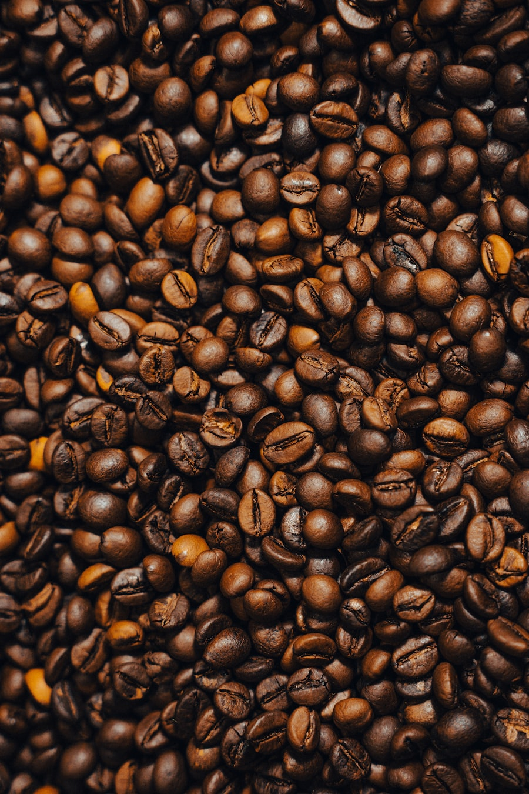

Born dark,
roasted light.
Ketelzwart roasts small batches in Amsterdam-Noord. Every Saturday the kettle room is open: taste three beans side by side and take home the one that stays with you.

The beans
Three beans, nothing else
Light, medium, darker. Roasted every week, priced openly, ordered light to dark.
The roastery
Twelve kilos at a time
Every batch gets a number and a card in the roast log. The card travels with your bag.
Saturdays
Tasting at the kettle
Three coffees, three brew methods, forty-five minutes. Free, next to the roaster.